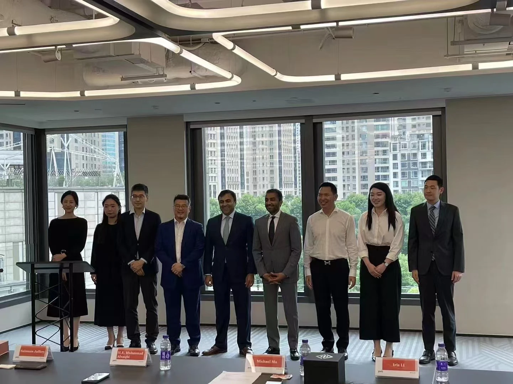
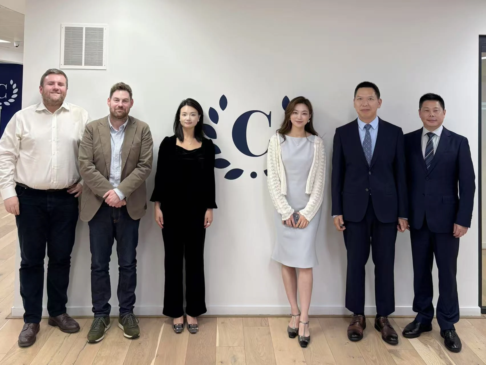
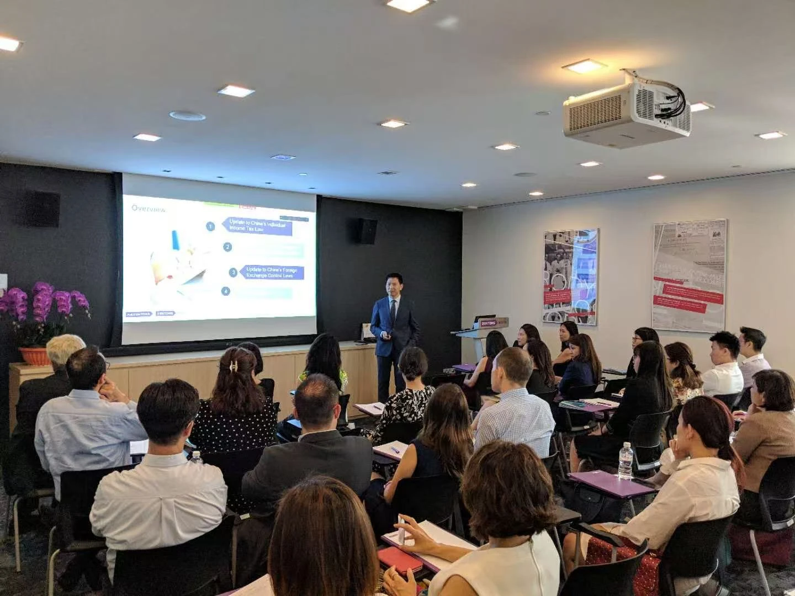
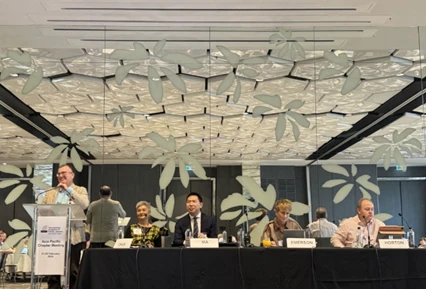
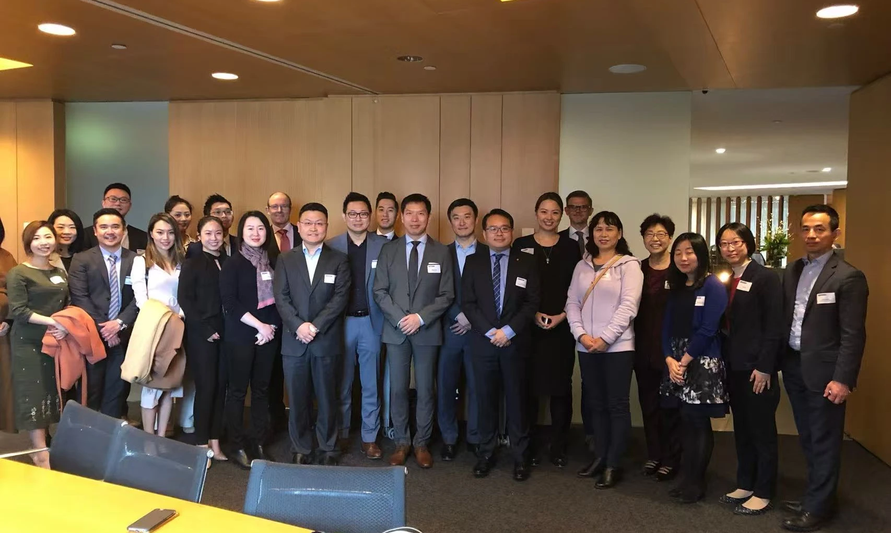
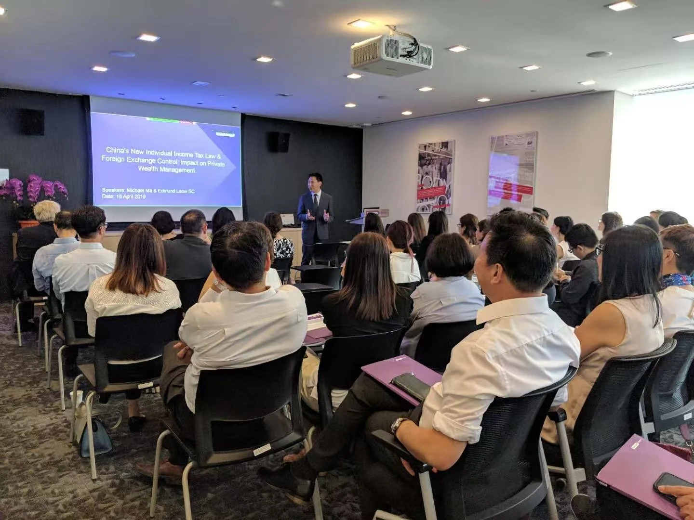

A CHINESE PERSPECTIVE. AN INTERNATIONAL CONVERSATION.
Across jurisdictions. Connected by professional exchange.
Families and assets rarely remain in one place. Grounded in Chinese-law experience, sustained professional exchange helps illuminate how different jurisdictions approach the same cross-border questions.
FROM SHANGHAI, WITH PERSPECTIVE
Select a map point or jurisdiction below to explore the exchange recordLoading map…
This page records professional connections and exchanges over time. It does not represent a joint practice, an exclusive relationship or the presence of an office in any listed jurisdiction. The map is illustrative and does not depict administrative boundaries.
CONVERSATIONS THAT CROSS BORDERS
Meeting is the beginning of professional understanding.

London · United Kingdom
Exchange with local practitioners

Dubai · United Arab Emirates
Dubai International Financial Centre exchange

Brisbane · Australia
International Academy of Family Lawyers event

Singapore
Cross-border family law exchange

Sydney · Australia
Dentons professional exchange

Singapore
Dentons professional exchange
CROSS-BORDER THINKING